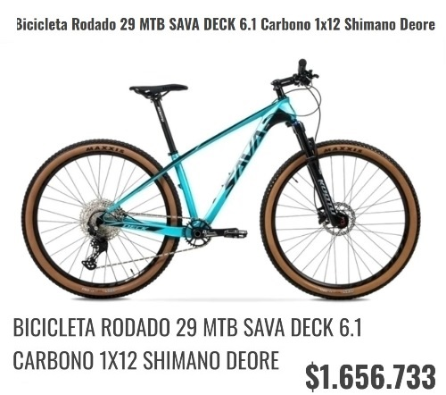

CARACTERISTICAS
- - Marca: Sava
- - Modelo: Deck 6.1
- - Cuadro: Fibra de carbono old 148mm Boost
- - Horquilla: Kootu XC-340 aire (100mm Boost)
- - Manija de Cambio: Shimano Deore
- - Cambio: Shimano Deore RD-M6100 (1x12v)
- - Frenos: disco hidráulico
- - Llantas: Aluminio 34Hx14G A/V
- - Cubierta: Maxxis Ikon 29x2.20 Skinwall EXO Protection
- - Asiento: MTB Sava
- - Stem: Aluminio 3D forged 31.8x90x28.6mm
- - Portasilla: Aluminio 31.6x350mm
- - Pedales: Aluminio 9/16
- - Juego de Direccion: Neco
- - Cadena: 118 links, 12v.
- - Caja pedalera: Pressfit BB92
- - Maza Trasera: Solon, micoro spline 125 eje pasante
- - Maza delantera: Solon, M15X110mm eje pasante
- - Peso: 12kg. aprox.